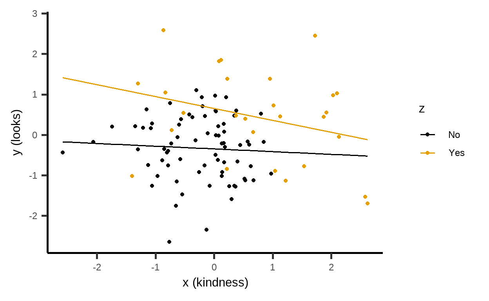

Learning objectives
In this module you will learn:
about inverted forks,
colliders, and
that we sometimes unintentionally create associations where there are none.
All good things come in threes
Even complex causal diagrams consist of relatively simple basic elements. Besides the chain and the fork, there is the inverted fork.
Remember: \[A \rightarrow B\] says that \(B\) listens to \(A\), but not vice versa.
Dating
Again, highly simplified: Let’s assume that kidness and looks play a role in whether we go on a date with someone.
Would you date someone who was neither kind nor good-looking? Maybe, but more likely not.
Suppose
So you’d date someone who is nice and/or good looking.
This assumed model can be represented with the following causal graph:

The structural causal model consists of the following assignments:
\[\begin{eqnarray*} \color{green}{X} &=& U_{\color{green}{X}}\\ \color{blue}{Y} &=& U_{\color{blue}{Y}}\\ \color{violet}{Z} &=& f_{\color{violet}{Z}}(\color{green}{X}, \color{blue}{Y}, U_{\color{violet}{Z}}) \end{eqnarray*}\]
Collider
In cases like these: \[\color{green}{X} \rightarrow \color{violet}{Z} \leftarrow \color{blue}{Y}\], the variable in the middle – here \(\color{violet}{Z}\) – is called a collider. \(\color{violet}{Z}\) is an effect of \(\color{green}{X}\) and \(\color{blue}{Y}\).
Contrasting fork and inverted fork
Recall that in a fork, there is a non-causal path from \(\color{green}{X}\) to \(\color{blue}{Y}\): \[\color{green}{X} \leftarrow \color{violet}{Z} \rightarrow \color{blue}{Y}\]
Suppose: In summer,
To summarize: In a fork, there is an unconditional association between \(\color{green}{X}\) and \(\color{blue}{Y}\); but given \(\color{violet}{Z}\) – that is, conditional – there is no relationship.
In an inverted fork there is no association between
\(\color{green}{X}\) and \(\color{blue}{Y}\): \[\color{green}{X} \rightarrow \color{violet}{Z}
\leftarrow \color{blue}{Y}\] Both on the
The inverted fork thus behaves exactly the other way around than the normal fork. There is no unconditional association, but there is a conditional association.
Model and data simulation
Consider the following structural causal model:
\[\begin{eqnarray*} \color{green}{X} &=& U_{\color{green}{X}}, \quad U_{\color{green}{X}} \sim \mathcal{N}(0,\,1), \\ \color{blue}{Y} &=& U_{\color{blue}{Y}}, \quad U_{\color{blue}{Y}} \sim \mathcal{N}(0,\,1), \\ \tilde{\color{violet}{Z}} &=&\begin{cases} 1 & \text{wenn } \{ \color{green}{X} > 1 \,\vee\, \color{blue}{Y} > 1\} \\ 0 & \text{sonst} \end{cases}, \\ \color{violet}{Z} &=& (1-U_{\color{violet}{Z}}) \cdot \tilde{\color{violet}{Z}} + U_{\color{violet}{Z}} \cdot (1- \tilde{\color{violet}{Z}}), \quad U_{\color{violet}{Z}} \sim \mathcal{B}(0.05), \end{eqnarray*}\]
\(\mathcal{N}(0,\,1)\) is a standard normal distribution, \(\mathcal{B}(0.05)\) is a Bernoulli distribution with \(\pi=0.05\). \(\tilde{\color{violet}{Z}}\) is an auxiliary variable that takes the value \(1\) if \(\color{green}{X}\) or \(\color{blue}{Y}\) are greater than \(1\). Otherwise, \(\tilde{\color{violet}{Z}}=0\). Whether \(\color{violet}{Z}\) is really \(0\) (no date) or \(1\) (date) depends on random luck.
\(\vee\) is the logical or
operator (| in R).
The following R code simulates this data generating
mechanism:
library(mosaic) # load package
set.seed(1896) # set random seed for reproducibility
n <- 100 # number of observations
SimData <- tibble(x = rnorm(n), # X
y = rnorm(n), # Y
u_z = rbinom(n, size = 1, prob = 0.05)) %>% # U_z
mutate(z = (x > 1) | (y > 1)) %>% # Z~
mutate(z = (1-u_z) * z + u_z * (1-z)) %>% # Z
mutate(z = ifelse(z, "Yes", "No"))Both the mathematical representation and the R code are
a bit more complex here. But what matters here is the data that comes
out of it:
Associations
These data describe the previously described dating situation. The color of the dots tells us if we have dated someone (\(\color{violet}{Z}\)). \(\color{green}{X}\) is kindness and \(\color{blue}{Y}\) is looks.
If, separately for the two levels of

Thus, when we consider
If we look at the relationship between \(\color{green}{X}\) and \(\color{blue}{Y}\) without considering \(\color{violet}{Z}\), we can see that the variables are indeed independent:

Note: The fact that the straight line here is not completely parallel to the x-axis is due to random variation. Even if there is no correlation between the variables in the data generating process (\(\rho=0\)), there may be one in a (simulated) sample (\(r\neq0\)).
We often hear the sentence:
Don’t trust any statistic that you haven’t falsified yourself
If we take our dates as a sample for the analysis of a possible association between looks and kindness, we should better say:
Don’t trust any statistic that you have falsified yourself.
Of course our dates are not fake, but we have a self-selected sample on which we base our analyses. This delivers a distorted result with correlations in places where there are actually none.
Summary
To determine the causal effect of \(X\) on \(Y\) in an inverted fork \[X \rightarrow Z \leftarrow Y\], the collider \(Z\) must not be considered. (This is also true for all descendants of \(Z\)). If \(Z\) is conditioned upon, a spurious association between \(X\) and \(Y\) is generated and biases the analysis. For example, one should not include \(Z\) as an explanatory variable in a linear model. Nor should one divide the data into groups based on \(Z\) and analyze them in separation – this also distorts associations.
Note
This course was supported by a grant from the German Federal Ministry of Education and Research, grant number 16DHBQP040.